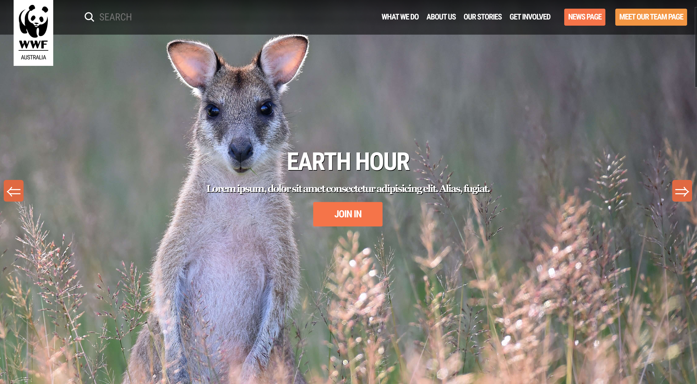
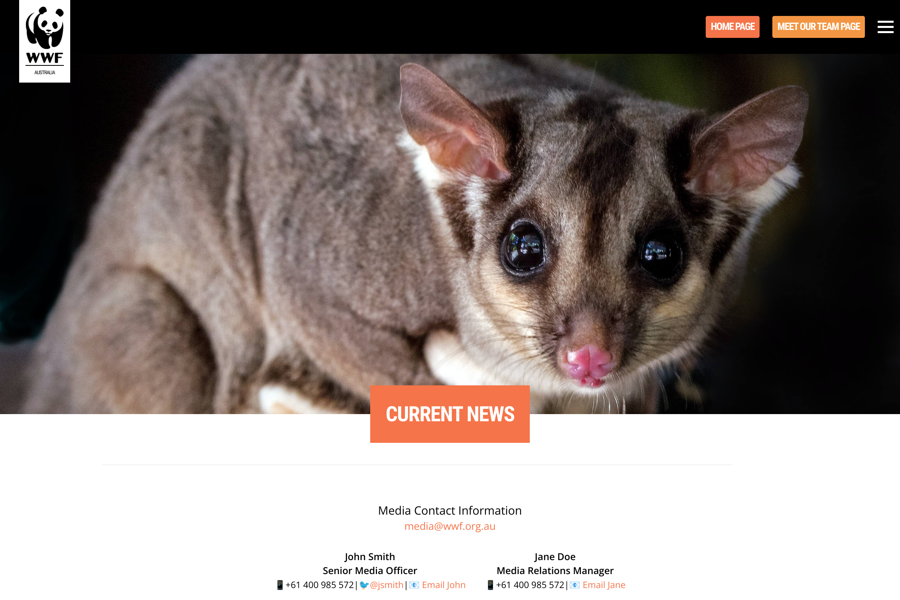
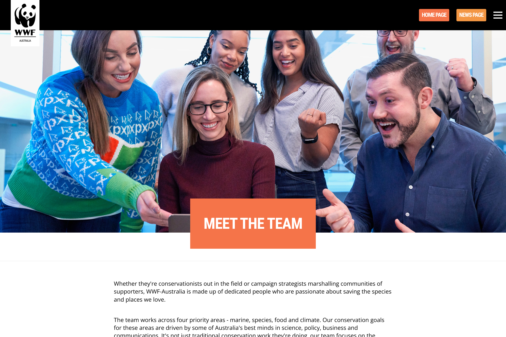
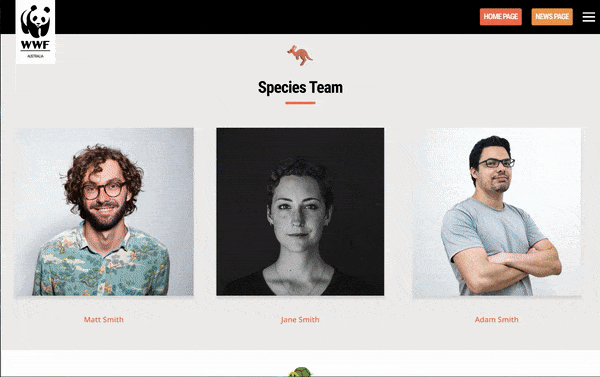

Summary
This project was suggested to me by a friend currently living in Australia and doing a Master's degree related to programming. He sent me this project from his course as a way to practice and test my current frontend developer skills, as it had for him.
The aim of the project was to create three linked webpages which mimic those of a real, charitable organisation's website (one home page plus two additional pages), with a strong emphasis on using and managing images effectively. To not overcomplicate the matter, I built the same WWF Australia website as my friend did - please note, they have since modified the website design since I made this project.
This project is the first time I attempted to build to such a high level across multiple pages, and it was a good tester of all the frontend developer knowledge I had learned up until this moment. I was still unsure of my abilities before starting this project, so to relax myself I decided not to set the bar too high and just focused on trying to create webpages that looked and felt like the original ones. Therefore, I didn't focus too much on the actual webpage content on this project. I noticed a continuing improvement and comfortableness as I went through the pages and once finished I was happy with the final results.
- HTML5
- CSS
- Responsive Web Design
- Javascript (ES6+)
Home Page
News Page
Meet the Team Page
Building the project 🛠️
The most difficult part of this project was probably the home page. Not only because it was the first page I built and so I was feeling less confident than when I built the second and third pages, but because of the amount of images on it and because of the different interesting features included on it.
For example, on this page we can see the first ever 'sticky' navbar I have built and the first ever image carousel I have built. I also built a hamburger menu for smaller screen sizes with an attractive menu which appears and covers the whole page when clicked, and finally I built two image grids using CSS Grid with an additional orange border which appears on hover.
Sticky navbar, image carousel, hamburger menu

Image Grids

The other two pages felt slightly easier once I had the first one built. Additionally, the bottom section of the 3 pages is basically identical, and the 2 additional pages emulated each other a lot design wise which saved me from writing up a lot of new CSS code.
However, both of the new pages provided their own challenges. For the news page it was correctly creating the little news cards with additional hover effects. For the card, to get the division between image and text I eventually worked out that it was better to create a flexbox container with two divs inside of it. The first div would have a background image which I then applied background properties to in order to make sure the image scale and ratio matched the size of the box. I also gave it a fixed with and the other div a flex-basis of 1 so the text part grew to occupy the remaining card space.
To get the effect where the picture seemed to become more saturated on hover I tried out an idea where a slightly opaque white ::after pseudo-element on the card would disappear on hover, making it look like the image became more saturated. It worked!
News Card Hover Effect

For the meet the team page the main challenge was creating a small image gallery of people which had the effect of enlarging each image on hover and changing the name color from orange to black. I was unsure at first whether to use CSS Flexbox or Grid for this task, but eventually thought that Grid would work better as the layout was quite formulaic. However, then I struggled to get the images to correctly scale up and down with the viewport. After looking at my notes I came across the value of "repeat(auto-fit, minmax(A, B))" for the grid-template-columns property and then I tried using minmax(A, B) for the grid-template rows property. To much excitement, this worked!
Finally it was a question of getting the text to change color when the user hovered over just the image. After thinking about it and playing around I eventually realised that if I wrapped the image in a div, set the text color of that div to orange by default but to black on hover, when the user hovered over the image, this would also trigger the text change for the div it was contained inside of. It's moments like these which have helped me truly understand the relationship between HTML elements and how the 'cascade' of CSS works.
Image Gallery Layout and Effects
Project Reflection 🤔
I definitely flexed and strengthened my frontend development muscles with this project, particularly in regards to CSS and responsive web-design! It was very useful for putting into more serious practice a lot of what I had learned about CSS up until that moment, or realising the gaps in my knowledge. In general this project made me realise that yes I can build high-quality looking websites, and that felt good!
I also dabbled with Javascript in this project. Granted it's not much (the hamburger menu and image carousels), and I needed help in order to build them, but at this point I was still taking my first steps with Javascript after having studied it for a while and it felt good to have practiced with it.
What I found a bit odd about the project requirements was the need to use HTML media queries within the <head> tag instead of CSS media queries like I had been seeing online. Although it was good to learn about and use this other method of creating responsive websites, I soon discoverd I didn't like it because it requires several, individual css files. This resulted in masses of code duplication, lots of manual adding and removing of CSS code, and often left me confused as I was trying to manage lots of similar code across 3 documents.